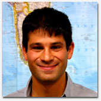

|  |
Jonah Steinberg, Assistant Professor of Anthropology, received his B.A. from Swarthmore College and his Ph.D. from the University of Pennsylvania. He conducts research, primarily in South Asia, on the sociocultural aspects of globalization. Dr. Steinberg is also interested in marginality and inequality, and social crisis and social change. His dissertation, based on field work in the Himalayan ranges of Pakistan and Tajikistan, explored the transnational organization of the widely-scattered Isma'ili Muslim sect, and at the ways that local subjects become aware of a connection to a global cultural network. He is currently completing a book manuscript based on this dissertation.
In line with his interests in the ethnography of transnationality and the local impact of global social formations and international organizations, Dr. Steinberg is developing a project on Indian Ocean political economies which explores continuities and discontinuities between past and present forms of transregional interaction in the Indian Ocean. In this project, to be based primarily in the city of Malé in the Republic of the Maldives, he will investigate historical precursors to and preconditions of globalization and their relationship to contemporary oceanic networks and world markets. He will explore ways that historical channels of human movement connect to contemporary pathways of communication made possible by flows rooted in global processes.
Dr. Steinberg is involved in a new initiative on Global Studies at UVM. His ethnographic interests cover projects ranging from the encounter between radical and local forms of Islam to transnationality among Romani Gypsies, and from Indic diasporas to indigenous discourses of the Asian tsunami. His courses for 2006-2007 include “Street Children,” “Social Crisis,” and “The Peoples of South Asia.”